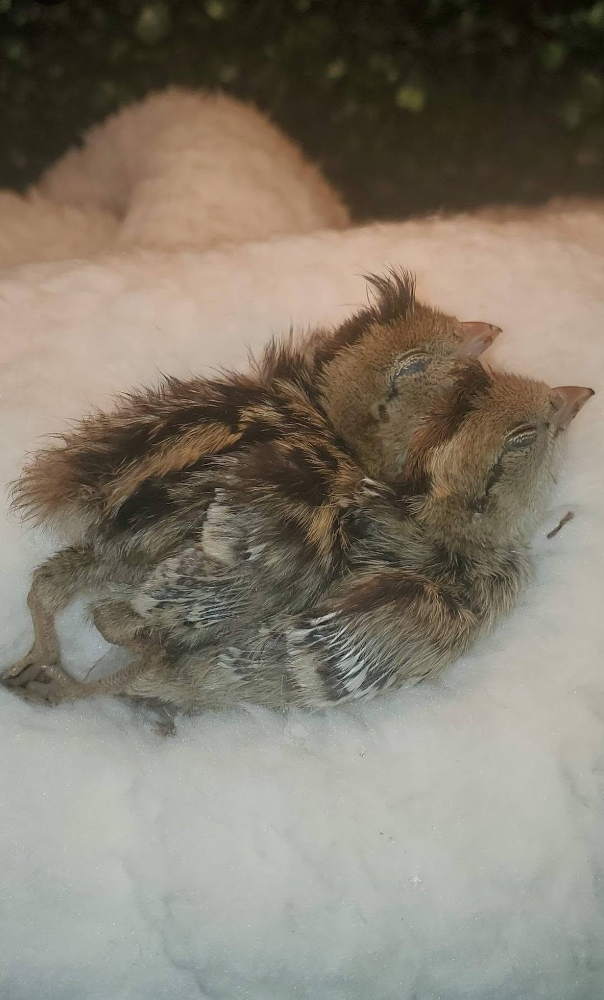
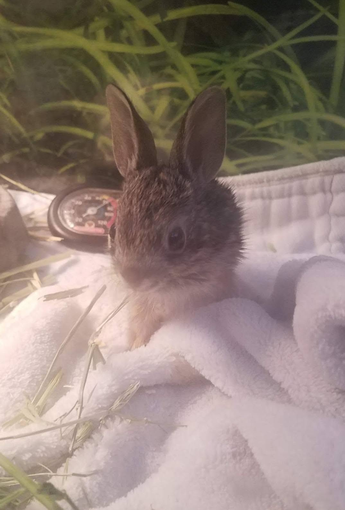

Observe First
Keep children and pets away. Look for visible injuries, weakness, or immediate danger.
Wildlife help
Before feeding, moving, or handling wildlife, contact a licensed rehabilitator for guidance. Observe first and make sure the animal truly needs help.
Text Crystal's Critter Haven
Immediate steps
These steps are for non-dangerous wildlife and help protect both you and the animal while you seek professional guidance.
Keep children and pets away. Look for visible injuries, weakness, or immediate danger.
If help is clearly needed, place the animal in a ventilated box or carrier and keep it warm, dark, and quiet.
Do not offer food, water, or medication unless a licensed rehabilitator instructs you.
Text a clear picture and the nearest major crossroads to 480-220-6930.
Baby animal or injured wildlife?
Many healthy young animals are temporarily alone while a parent searches for food. An animal that appears abandoned may still be receiving care nearby.
If an animal is sick, injured, or truly orphaned, keep it warm, safe, and secure while requesting guidance. Avoid unnecessary handling and do not offer food or water unless instructed by a licensed rehabilitator.
Crystal's Critter Haven usually cannot provide pickup. Be prepared to transport the animal to the nearest appropriate rehabilitator after receiving instructions.

Before you contact us
Community resources
Services, intake policies, availability, and hours can change. Contact each organization directly before traveling.
Veterinary care
Rescue and adoption
Public services
Wildlife rehabilitation
Call 480-814-9339 for recorded guidance and rehabilitator contacts.